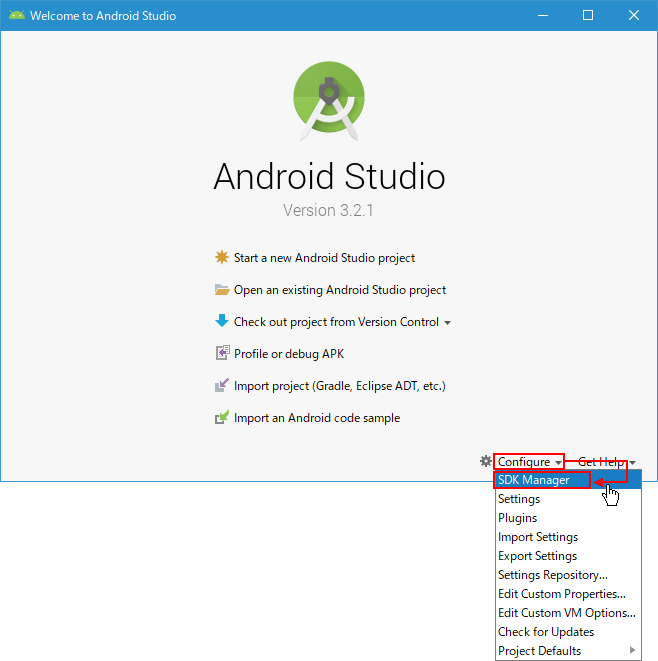
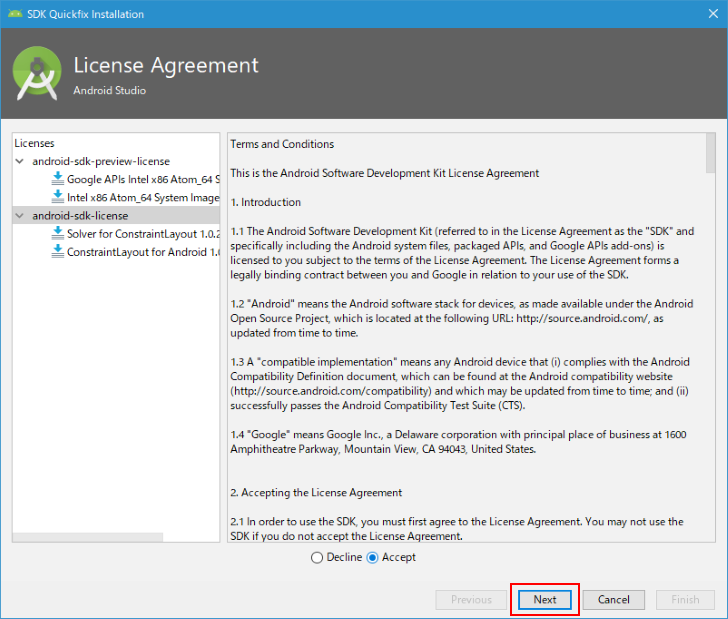

SDK Managerを使ってSDKおよびSDK Toolsを追加でインストールする
AndroidはいくつかのAPIレベルがあり、それぞれに必要となるSDKが用意されています。Android StudioをインストールしたときにデフォルトでインストールされたSDKを確認し、追加で必要となるSDKをインストールする方法について解説します。
必要なコンポーネントを追加でインストールする
Android Studioを起動してください。

画面下にある「Configure」をクリックし、表示されたメニューの中から「SDK Manager」をクリックしてください。

SDK Managerの画面が表示されます。
画面右下に表示されている「Show Package Details」をクリックしてください。
インストールがされているパッケージにチェックが入って表示されます。現在は「Android9.0(Pie)」の「Android SDK Platform 28」と「Sources for Android 28」がインストールされていることがわかります。
今回は追加で「Android9.0(Pie)」の「Intel x86 Atom System Image」「Google APIs Intel x86 Atom System Image」にチェックを行いました。
-- --
次に画面上部の「SDK Tools」タブをクリックしてください。
画面右下に表示されている「Show Package Details」をクリックしてください。
インストールがされているパッケージにチェックが入って表示されます。
デフォルトで次のパッケージがインストールされていました。
Android SDK Build-Tools 28.0.3 Android Emulator Android SDK Platform-Tools Adnroid SDK Tools Intel x86 Emulator Accelerator(HAXM installer) Android Support Repository Google Repository
追加でインストールするパッケージを選択していきます。最初に「ConstraintLayout for Android」の最新である「1.0.2」にチェックをします。
次に「Solver for ConstraintLayout」の最新である「1.0.2」にチェックをします。

-- --
SDK PlatformsおよびSDK Toolsの追加でインストールするコンポーネントの選択が終わりましたら画面下部の「OK」をクリックしてください。
インストールするコンポーネントの確認画面が表示されますのでよろしければ「OK」をクリックしてください。必要なファイルのダウンロードとインストールが開始されます。
Android SDK ライセンスおよびAndroid SDK Preview ライセンスのライセンスの確認画面が表示されました。
最初に「Android SDK Preview ライセンス」です。画面左側の「android-sdk-preview-license」をクリックすると画面右側にライセンスが表示されます。よく読んでいただき、同意できる場合には画面下部の「Accept」をチェックしてください。
次に「Android SDK ライセンス」です。画面左側の「android-sdk-license」をクリックすると画面右側にライセンスが表示されます。よく読んでいただき、同意できる場合には画面下部の「Accept」をチェックしてください。
すべてのライセンスの同意が完了したら、画面右下の「Next」をクリックしてください。

追加のコンポーネントのダウンロードとインストールが行われます。
インストールが完了すると次の画面が表示されました。「Finish」をクリックして画面を閉じてください。

-- --
SDK Managerを使ってSDKおよびSDK Toolsを追加でインストールする手順について解説しました。
( Written by Tatsuo Ikura )

著者 / TATSUO IKURA
初心者～中級者の方を対象としたプログラミング方法や開発環境の構築の解説を行うサイトの運営を行っています。